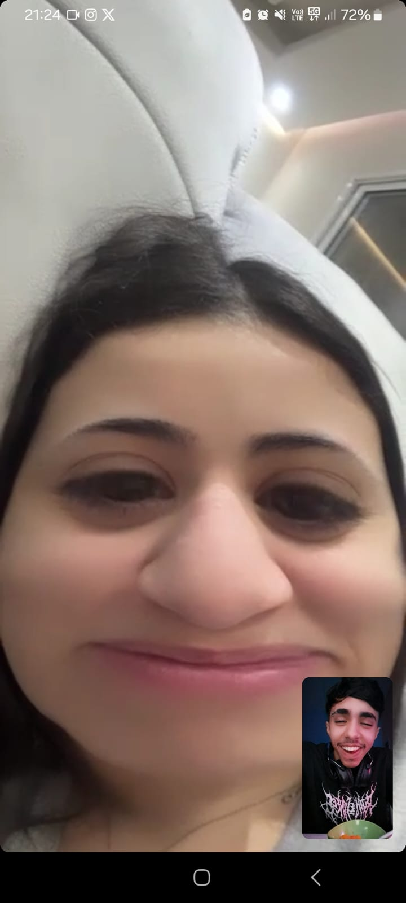
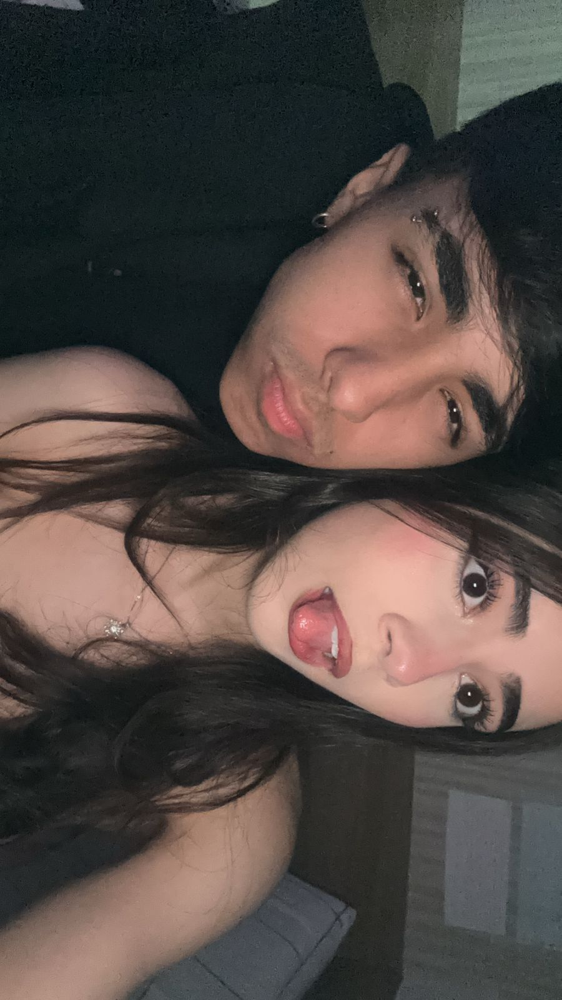
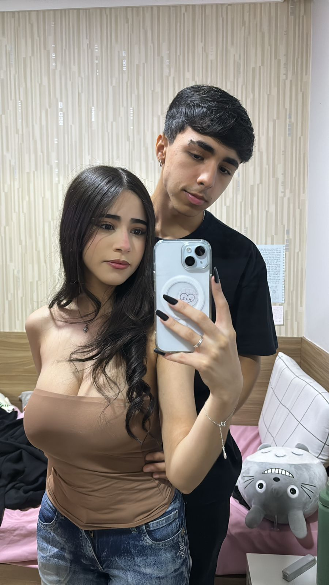
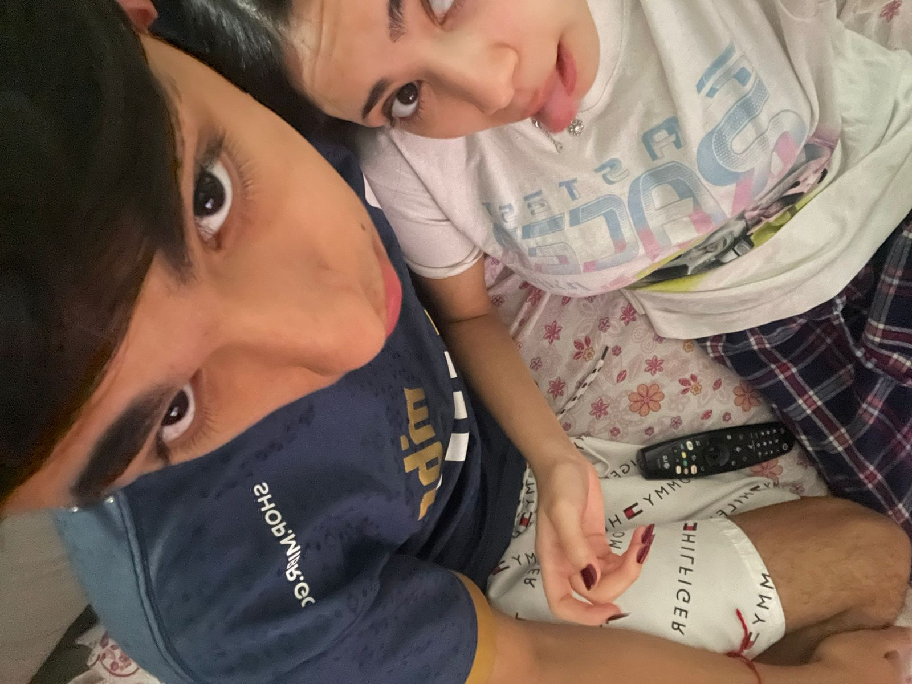
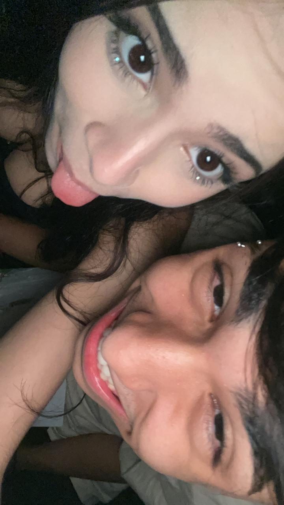

 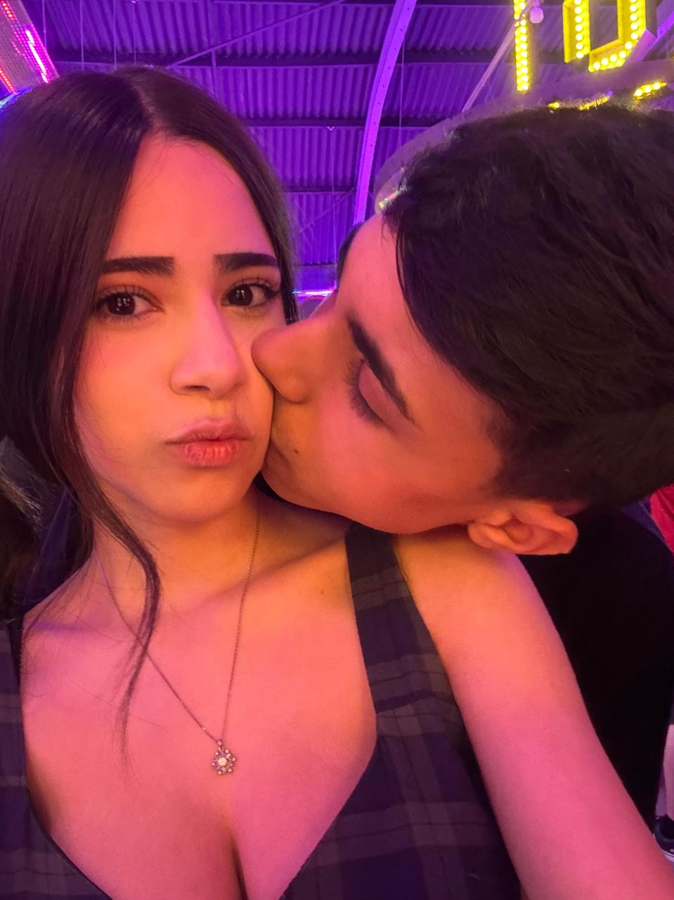
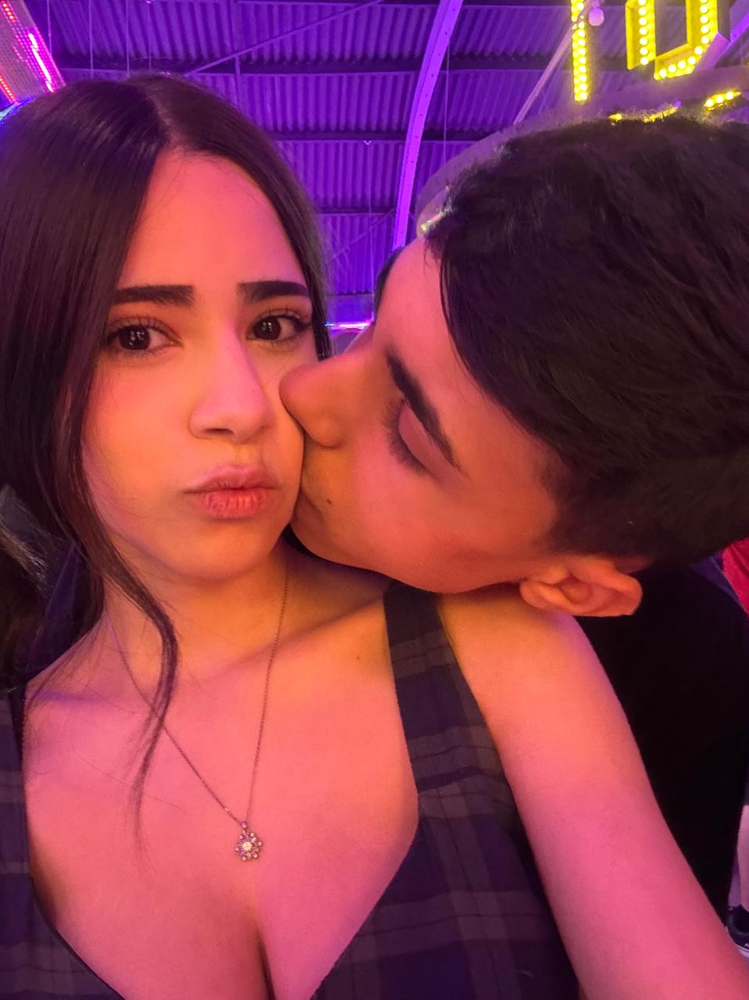

 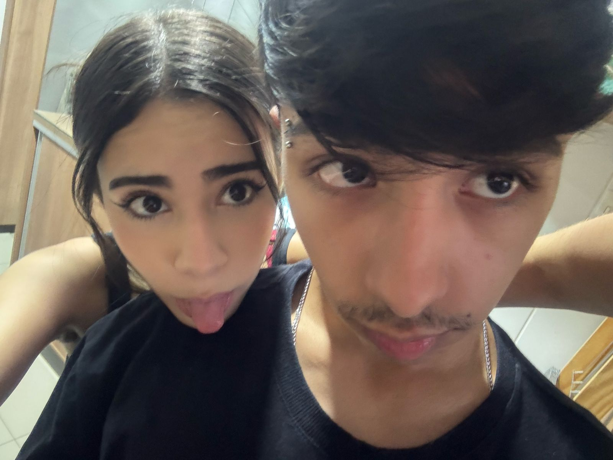
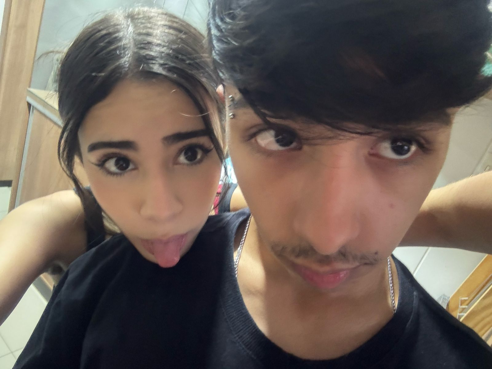


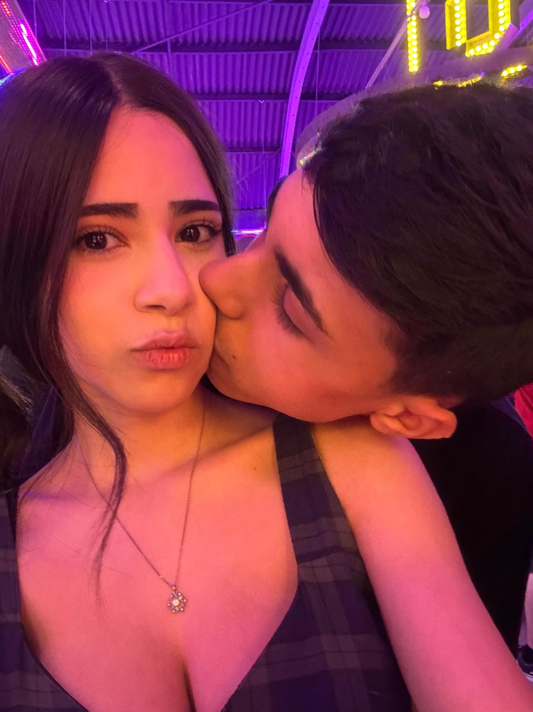
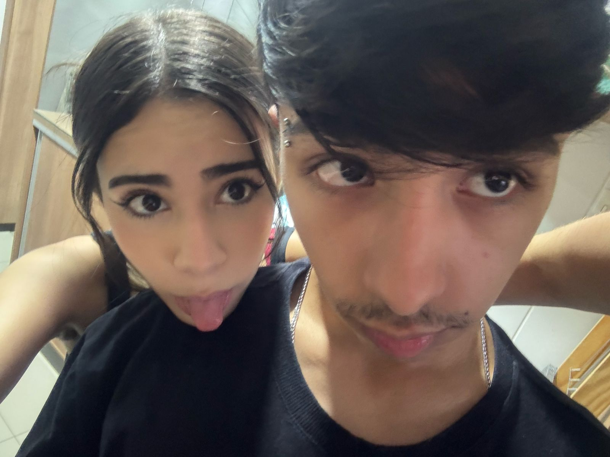
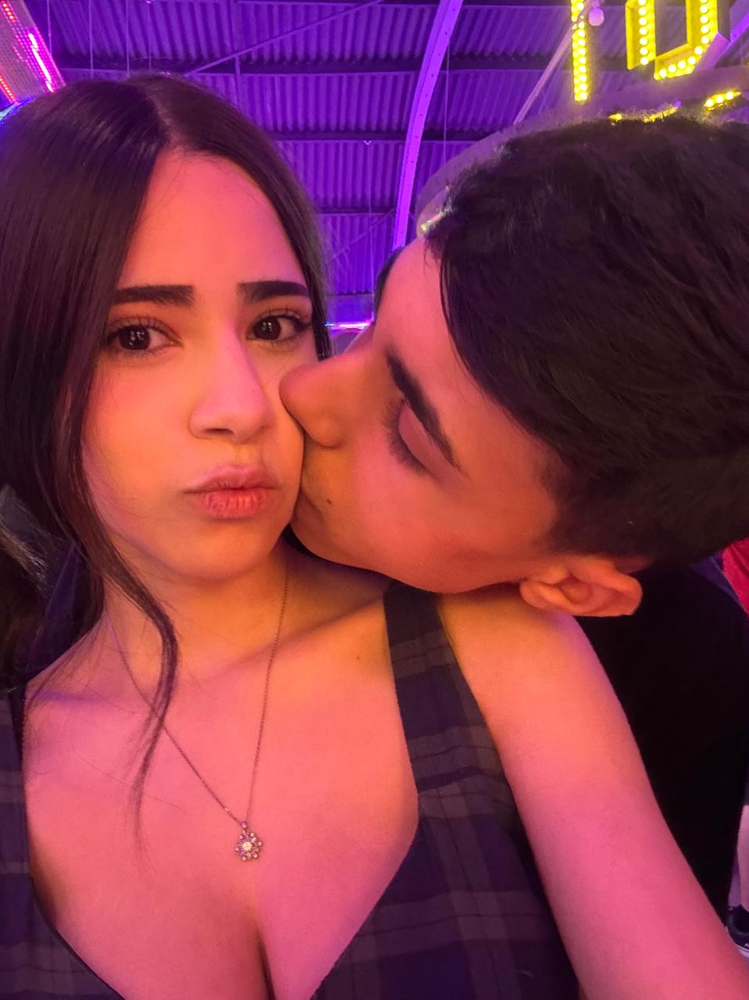
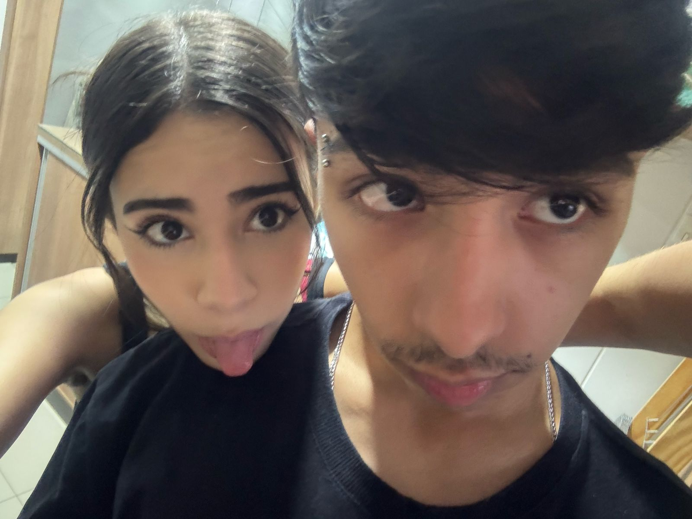
Nunca vou esquecer do dia que eu criei coragem para te dar uma resposta, depois de muitas idas e voltas (perdão) conversamos e decidimos tentar mais uma vez, e GRAÇAS A DEUS que deu certo, eu nao consigo imaginar como seria a minha vida sem voce (com certeza muito mais triste) em todos os aspectos. Todos os fins de semanas e momentos que passamos juntos é sem duvida os melhores momentos da minha vida Voce nao tem noçao do quanto eu te amo e sou grato por voce nao ter desistido de mim, nao existe sensação melhor do que amar e ser amado por voce. É bizarro como o tempo passa absurdamente rápido quando estou com voce, ja estamos 1 ano e 3 meses namorando, tirando o tempo que passamos juntos sem aliança (perdao 2), passamos por momentos bons, momentos ruins, perdas, vestibulares, momentos realmente dificies em nossas vidas, mas nao importa oque seja, sempre estivemos um ao lado do outro apoiando. E olha, sei que nao sou o namorado perfeito, mas saiba que eu faço e farei de tudo sempre pra te deixar feliz a sensaçao de te ver feliz eu juro pra voce que é indescritivel, ver voce sorrindo, seus olinhos, é como se eu nao tivesse mais problemas na minha vida. Enfim, fiz esse sitezinho para voce meu amor, muito triste que seu presentinho ainda nao chegou, mas fiz isso aqui com muito carinho. Eu te amo MUITO MUITO MUITO MUITO MUITO MUITO MUITO MUITO MUITO MUITO MUUUUUUUITO , e que possamos passar o resto de nossas vidas juntos juntinhos!!❤️❤️